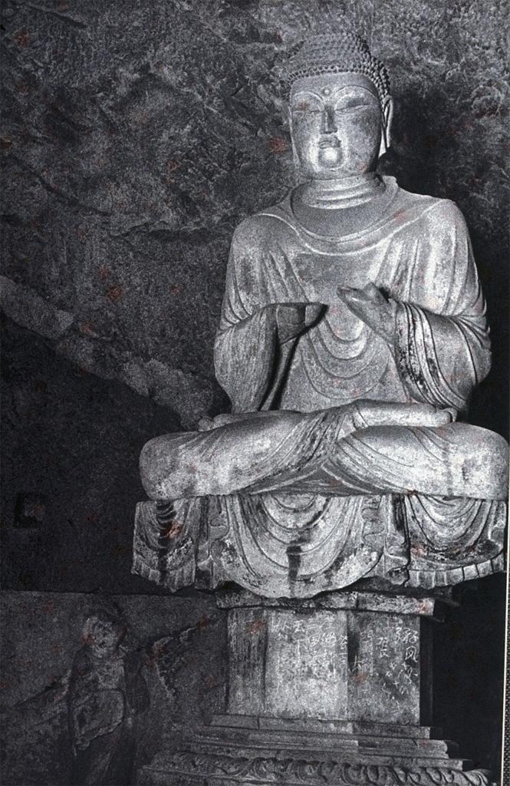

|  Mid Tang Dynasty. Seated Buddha. http://library.artstor.org/asset/ARTSTOR_103_41822000816155. |
Earthenware Mid Tang Dynasty Lung-Men Caves University of California, San Deigo |
The Buddha seated here is located in the Lung-men Caves, and is the main figure in the K’An-Ching Temple. This statue of Buddha sits on a platform suspended by an octagonal pillar. The platform is carved to seem like a cloth is draped over it, and the pillar has some nondescript Chinese characters written on it. The Buddha, seated with his legs crossed, sits upright with his hands in front of his chest. Unfortunately, his hands are gone from damage, and the exact position his hands are in are relatively unknown. He is wearing a headpiece that resembles a collection of small beads. In the background, there is a figure standing with his arms spread out, pointing in the direction of the Buddha. Instead of being a sculpture, this figure is just carved into the rock face behind the main Buddha. The Seated Buddha is made from earthen material, which suggests that the sculpture was created with the intent of being part of its surroundings and long-lasting. Furthermore, the level of detail on the structure, such the design of fabric carved onto the pedestal and the Seated Buddha, indicates that a high degree of craftsmanship. It was likely commissioned by those of high rank. Supporting this notion is the fact the sculpture is located at the Longmen Caves, whose patrons included emperors of the Northern Wei period and Tang period. Centre, UNESCO World Heritage. "Longmen Grottoes." UNESCO World Heritage Centre. Accessed December 04, 2017. http://whc.unesco.org/en/list/1003. |
|---|